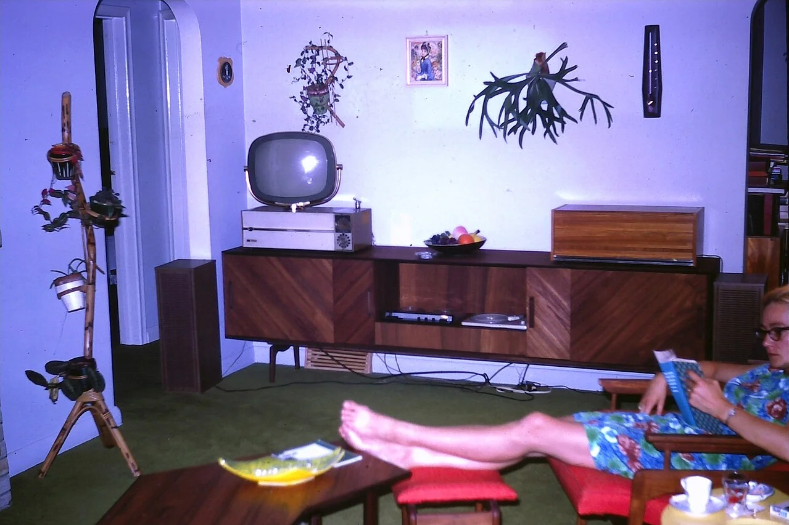
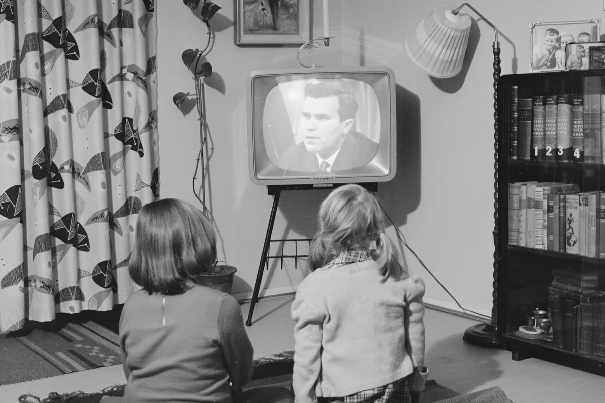
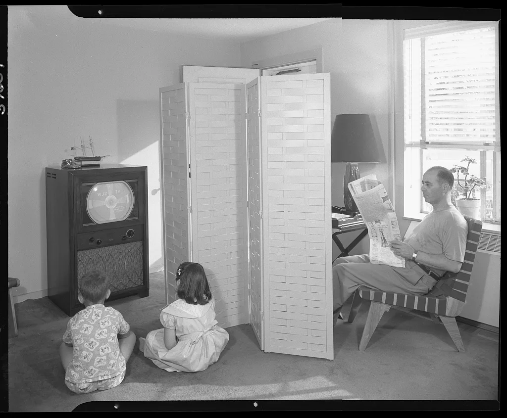
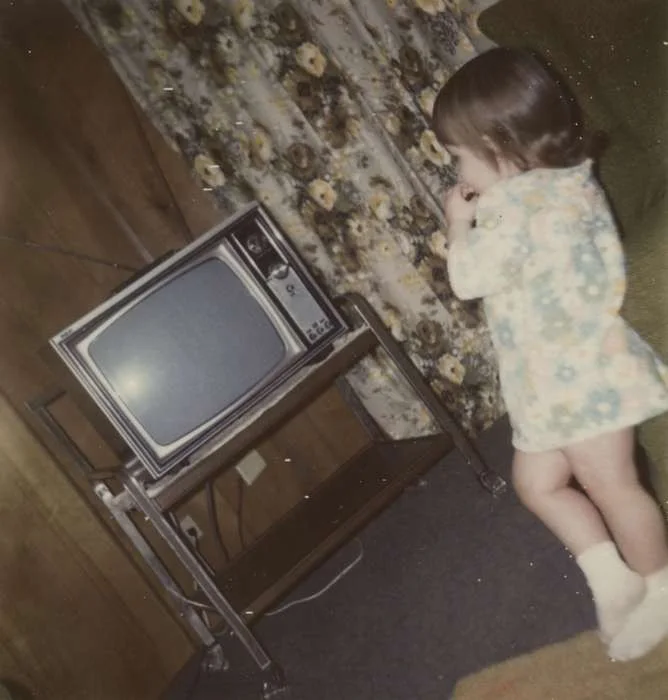

TV & ENTERTAINMENT - 1970s-80s
Saturday Morning, Pajamas On, and Nothing Else to Do
A bowl of cereal, the volume low so the grown-ups could sleep, and three networks competing for you until noon. Do you remember who you watched first?
It is Saturday. There is no school, nobody is hurrying you, and the television is already glowing in a dim living room. Maybe you are in pajamas on the floor. Maybe the cereal box is next to you, with the prize at the bottom.
For a few hours, the screen is yours.
Where it began

Cartoons were on television long before. But in the mid-1960s, the three big networks began to treat Saturday morning as its own block, and filled it with new shows aimed at children. The 1960s brought the likes of The Flintstones, The Jetsons, Bullwinkle and Space Ghost to Saturday screens.
By the 1970s, many of the shows packed several segments under one umbrella name, according to the Encyclopedia of Television, and an entire morning could pass in a single, steady stream.
The first thing you did

Maybe you woke up before anyone else and crept to the set. You turned the dial, adjusted the antenna and sat close to the screen, with the sound as low as you dared. Maybe an older brother or sister was already there, and you took the spot beside them.
Nobody had to tell you what time it was. You knew the schedule by heart.
The golden years

Then came the shows you probably still hum. Scooby-Doo, Where Are You! premiered on CBS on September 13, 1969: four teenagers, a talking Great Dane, and a masked villain pulled off at the end.
Super Friends arrived on ABC on September 8, 1973. Superman, Batman and Robin, Wonder Woman and Aquaman waited in the Hall of Justice for the Trouble Alert.
And on September 12, 1981, NBC began The Smurfs, which ran until 1989. Do you remember the "la la la" in the theme?
If you were a kid in the 1960s or '70s, the list is a little different, and yours is the right one. Every household had its own favorites and its own rules: which shows were allowed, which you argued about, which you secretly liked.
The theme songs

You can probably still sing at least one. The themes were short and catchy, and they told you everything: who the characters were, what they did, and why you should stay. When the music started, you stopped what you were doing.
Maybe you hummed one in school and someone across the room hummed the next line.
The cereal, the commercials and the ritual

Cartoons and breakfast cereal went together. Between the shows, there were commercials for sugary cereals, toys and games, and some of them stayed in your head longer than the plots did. Consumer groups noticed: in 1983, the group Action for Children's Television filed a complaint over ads using games of chance to sell sugared cereals to young children.
But you probably remember the ritual more than the ads: the bowl, the spoon, the floor in front of the set, the sibling who got to sit in the good spot.
Pajamas and the rules

There was always a rule. Maybe you could watch until a certain time, or until the chores were done. Maybe you had to keep it quiet so the grown-ups could sleep.
By noon, the cartoons were over, the cereal bowl was empty, and the day began for real. But for a few hours, it was yours.
When Saturday morning changed
The Children's Television Act of 1990 pushed stations to do more educational programming, and cable channels and weekday cartoons were giving children other options. By the early 1990s, the old Saturday-morning lineup had begun to fade, though some of it lasted another two decades. On September 27, 2014, the CW ran its last Saturday morning cartoon block, and for the first time in more than 50 years, no broadcast network showed one.
What was the first thing you turned the TV on to? Who sat next to you? What was in your bowl?
Send this to someone who watched with you. They may remember the show you forgot.
Sources
- Smithsonian Magazine, Scooby-Doo premiered on CBS Saturday morning Sept. 13, 1969 https://www.smithsonianmag.com/arts-culture/how-scooby-doos-origins-are-related-robert-kennedys-death-180974856/
- Cartoon Research, "And Justice for All: The 50th Anniversary of Super Friends" (Sept. 8, 1973, ABC) https://cartoonresearch.com/index.php/and-justice-for-all-the-50th-anniversary-of-super-friends/
- Library of Congress authority record, The Smurfs (NBC, Sept. 12, 1981 to Dec. 2, 1989) https://id.loc.gov/authorities/names/no2010129172.html
- Encyclopedia of Television (Museum of Broadcast Communications), "Children and Television" https://www.tvencyclopedia.org/tv-encyclopedia-3/children-and-television
- Animation World Network, "Mainstream Saturday Morning" https://www.awn.com/animationworld/main-stream-saturday-morning
- Saturday Evening Post (2021), "The Rise and Fall of Saturday Morning Cartoons" https://www.saturdayeveningpost.com/2021/05/the-rise-and-fall-of-saturday-morning-cartoons/
- Christian Science Monitor, Aug. 2, 1983 (ACT complaint) https://www.csmonitor.com/1983/0802/080201.html
- CinemaBlend and Gizmodo, Sept. 2014 (CW's last cartoon block, Sept. 27, 2014) https://www.cinemablend.com/television/Death-Saturday-Morning-Cartoon-Complete-67543.html https://gizmodo.com/this-is-the-first-weekend-in-america-with-no-saturday-m-1642441646
← Back to Dear Old Days · All articles · About · Privacy policy · Photo credits · Cookie settings